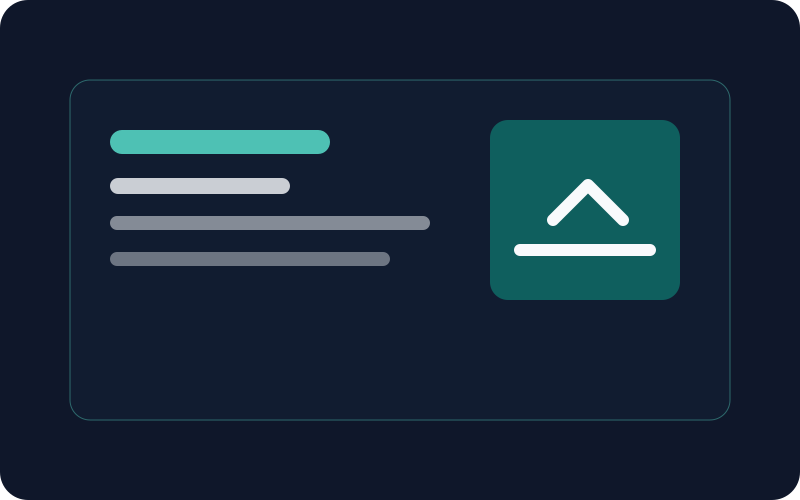
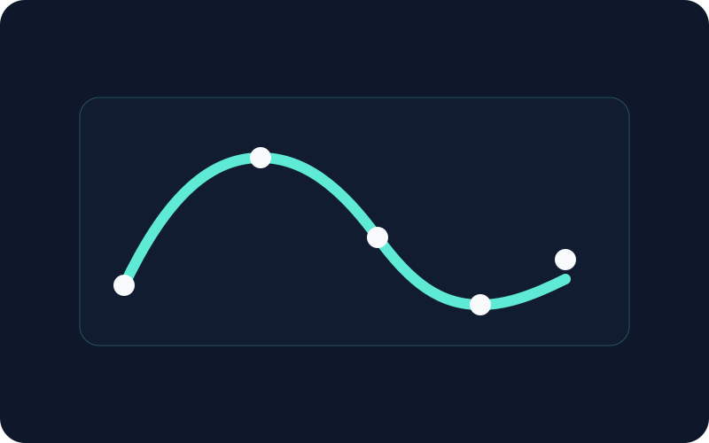
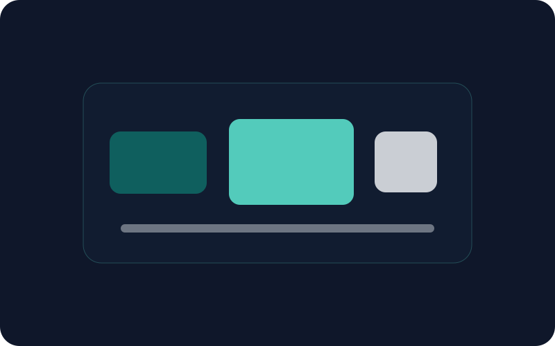

01
Backend
- Pythonپیشرفته
- FastAPIپیشرفته
- Flaskمسلط
AI / Backend Developer
من یاسین هستم؛ توسعهدهندهای متمرکز بر بکاند، اتوماسیون و راهکارهای هوش مصنوعی. ابزارهایی میسازم که برای آدمها روشن و برای تیمها قابل نگهداریاند.
درباره من
از تبدیل نیازهای مبهم به نرمافزارهای شفاف لذت میبرم. کار من در مرز توسعهی بکاند، آزمودن راهکارهای AI و اتوماسیون فرایندها قرار دارد؛ با تأکید بر کدی که خوانا بماند و نتیجهای که بتوان آن را سنجید.
هدفم ساختن ابزارهایی است که پیچیدگی را از دوش کاربر و تیم برمیدارند، نه اینکه آن را پنهان کنند.
مهارتها
سطحها نمایی صادقانه از تجربهی عملی من هستند و با پروژههای واقعی رشد میکنند.
پروژههای منتخب
نمونهها placeholder هستند؛ لینکها و متنها را با پروژههای خودت جایگزین کن.

پشتیبانی تکراری تیم خدمات را با یک دستیار سبک و گردشکار خودکار به فرایندی سریعتر و قابل پیگیری تبدیل کرد.

داشبوردی شفاف برای دیدن روندها و کمک به تصمیمگیری؛ با نمودارهای قابلفهم و فیلترهای بدون اصطکاک.

ورود، غنیسازی و اطلاعرسانی لیدها را در یک جریان مقیاسپذیر به هم متصل کرد تا تحویل به تیم فروش سریعتر شود.
یادداشتها
تماس
برای همکاری، فرصتهای Ausbildung یا یک گفتوگوی فنی، خوشحال میشوم از شما بشنوم.